“Do we need forests? Do we need trees? Do we need reefs? Or can we just sort of live in the ashes of all of that?” — Dr. Phil Dustan, Chasing Coral, 2017.
Meta-analysis of the effects of fire and post-fire reforestation on ecosystems and wildlife habitat: a step on the path to sustainable fire management of our future forests
Canada's forest ecosystems provide important cultural values and critical wildlife habitat for species whose populations are in decline (e.g., moose, grizzly bear, caribou, and many bird species). These forests are complex systems affected in various ways by fire, post-fire salvage and intensive reforestation; and changing climatic conditions are expected to lead to an increase in these activities. In just the last few years, we have witnessed significant increases in mega fires in North America requiring a call to action in developing data-driven adaptive management systems.
Canada has been an active participant in the Intergovernmental Panel on Climate Change (IPCC) since 1988; however, as of the turn of this century, Canada's forests no longer act as a net carbon sink. In 2015, Canada's forests contributed 237 megatonnes more carbon dioxide into the atmosphere than they absorbed; and the 2017 GHG emissions due to wildfire in British Columbia alone are estimated at ~180 megatonnes - 3x that of the previous highest emissions in 2014.
Efforts to reduce GHG and protect communities and resources may lead to (1) increased use of prescribed fire and managed wildfire to reduce the likelihood of mega fires; and (2) intensive salvage and reforestation to fast track post-disturbance carbon sequestration. However, to date there has been limited synthesis to help resource managers avoid adverse implications for wildlife and local communities. With the Burning Questions project, we identified all in situ plant-fire data sets from central British Columbia and collated them into a single database (db2020). Next, we consulted land managers to identify their foremost questions about ecosystem response to fire. Meta-analysis of db2020 addressed many of those Burning Questions, and we are relaying our process and results back to the land managers involved in the consultation process via meetings, publications and apps we are starting to build.
Capturing this data today is vital because many of these data sets are at risk of being lost. The challenge of management decisions to address the speed at which Canada's forests are expected to decline will need to be met with solid benchmarks and people willing to take the risks to face the problem of forest ecosystem collapse. The investment already dedicated to the field work necessary for inventory and trials can be further leveraged to answer questions that are yet to be asked; and we have found that by pooling the data we are able to approach ecological problems in innovative ways and have the appropriate amount of data to provide meaningful answers.
Our database included 49 North and Central Interior sites including the wet South-Central Interior (ICH, ESSF, and wetter SBS) and the fire-prone Northern Interior (drier SBS, SBPS, and BWBS). We identified 24 additional data sets we were unable to incorporate into the database due to logistical obstacles (such as the data not having been digitized and located in storage) and time constraints.
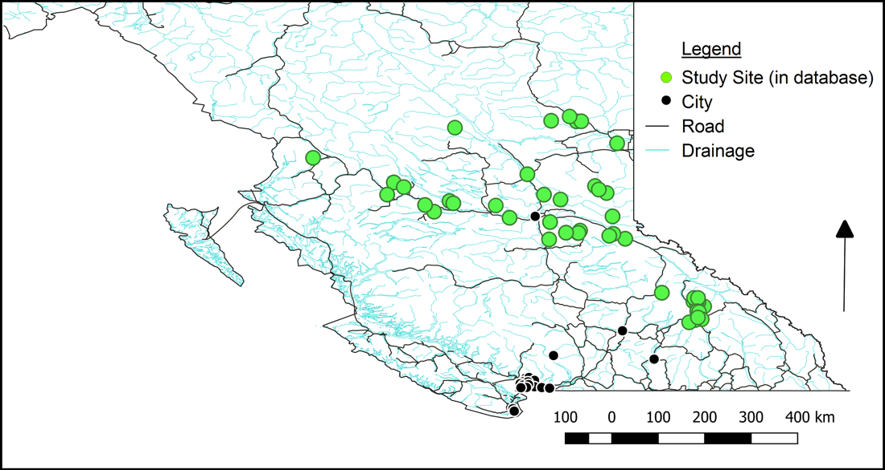
What makes this work so special is that every record originated from in situ field measurements. That data was earned the hard way — through weeks in remote locations, flat tires and washed-out roads, unexpected barriers to access, the constant search for funding, and genuine personal risk, from clouds of blackfly to encounters with large mammals including bears, moose, and mountain lions.
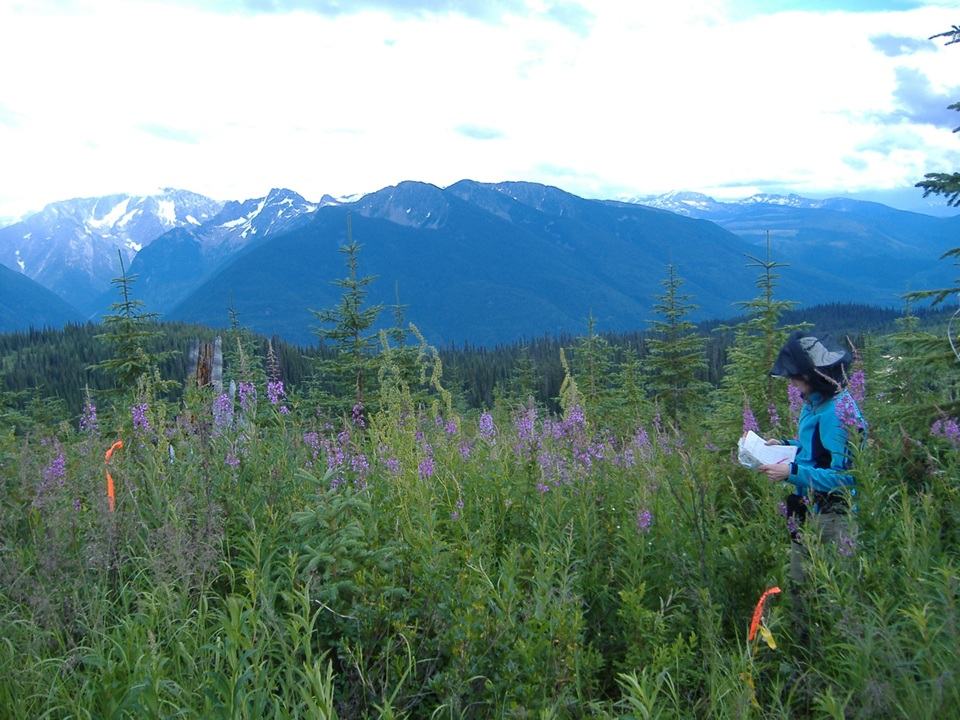
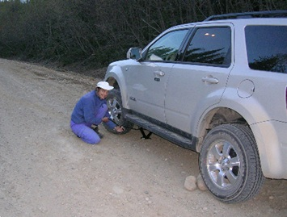
Every data set was unique and created for its own purpose. This meant that there was considerable transformation of the original data sets to ensure (1) integration into the master database (properties like structure, replacement of non-data placeholders such as spaces and periods, taxonomic consensus, and streamlining measures such as coordinate systems or dates); and (2) no loss of information - which sometimes meant altering the master database structure as well.
There were many analyses conducted - those to answer specific questions posed by the land managers as well as those posed by the research team to broaden our understanding of how these self-organizing complex systems operate and how this data may be leveraged for refining future studies. All analyses were conducted in R. The work spanned several scales, from landscape-level community ordination down to individual species and the forest floor.
Regularized Discriminant Analysis (RDA) ordination, with multivariate analysis of variance (method adonis) and variance partitioning (method varpart). The master data set included 9 sites in the Interior Cedar-Hemlock (ICH) ecosystem. Shown here: understory vascular plant community composition across Prescribed Burn vs. Wildfire vs. No Burn for the 8 ICH sites without control units. *Vegetation data underwent Hellinger standardization. Excluding Kinskuch.
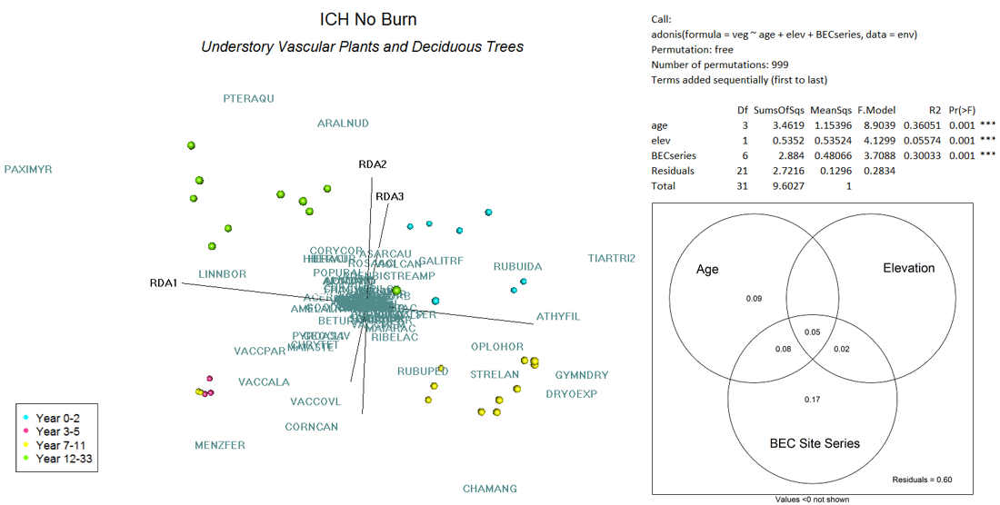
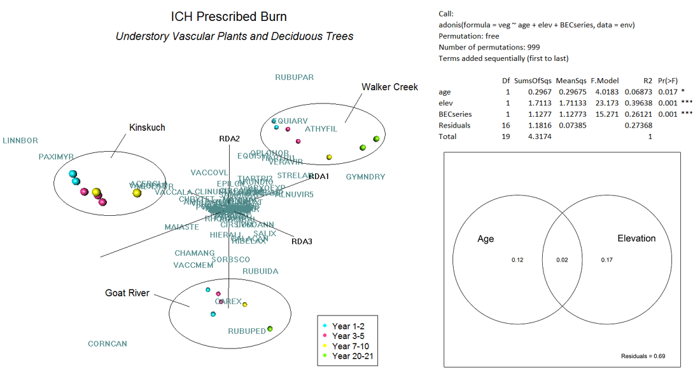
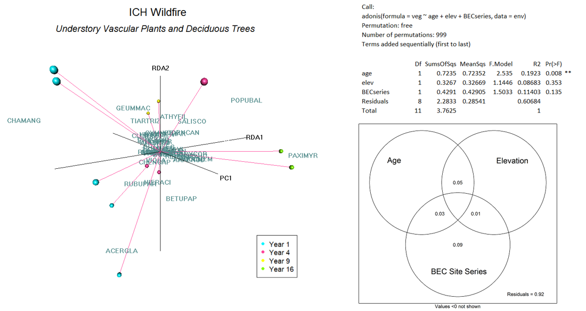
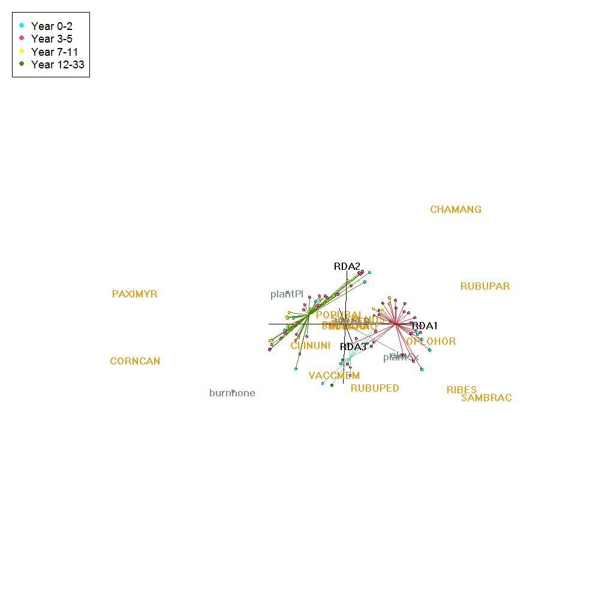
Kinskuch was the only ICH site with control plots: understory vascular plant community composition under Prescribed Burn vs. Control (No Burn) after clearcutting.
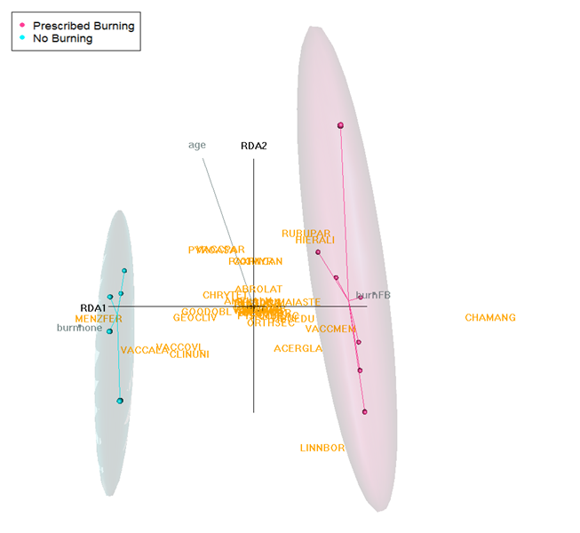
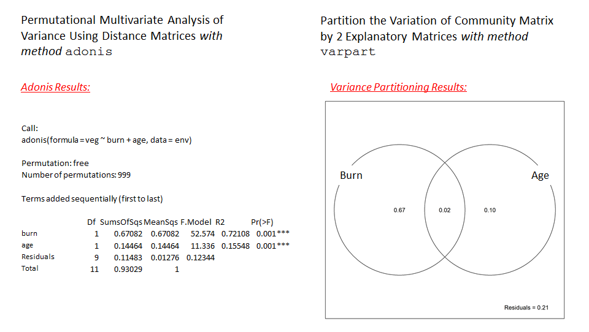
Spanning plant functional types, genus and species level, and the forest floor.
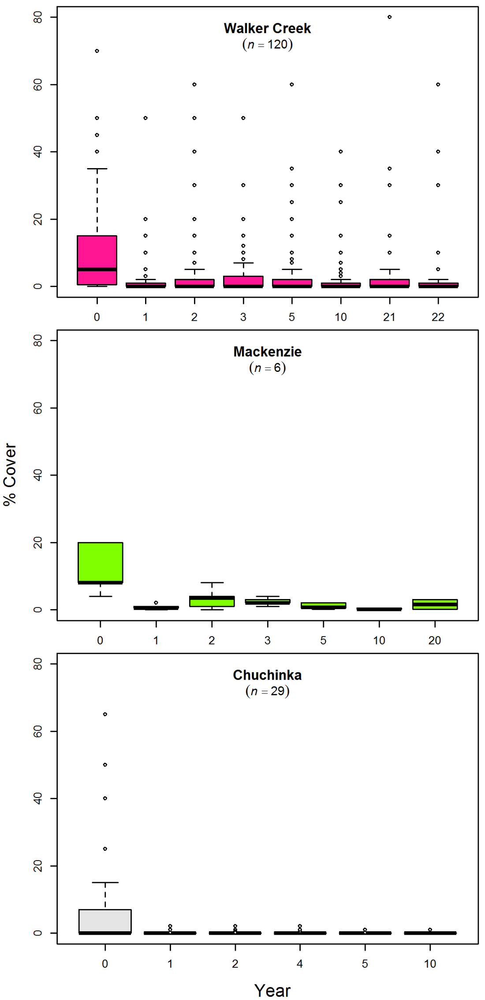
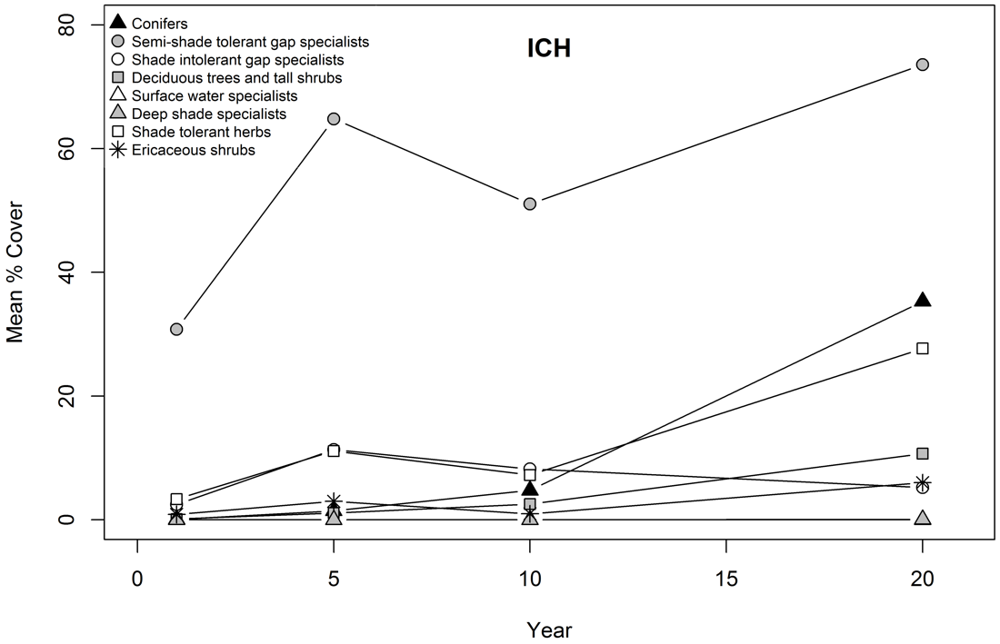
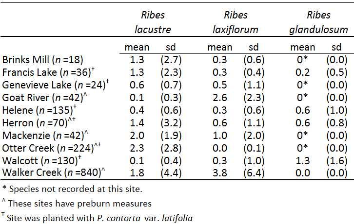
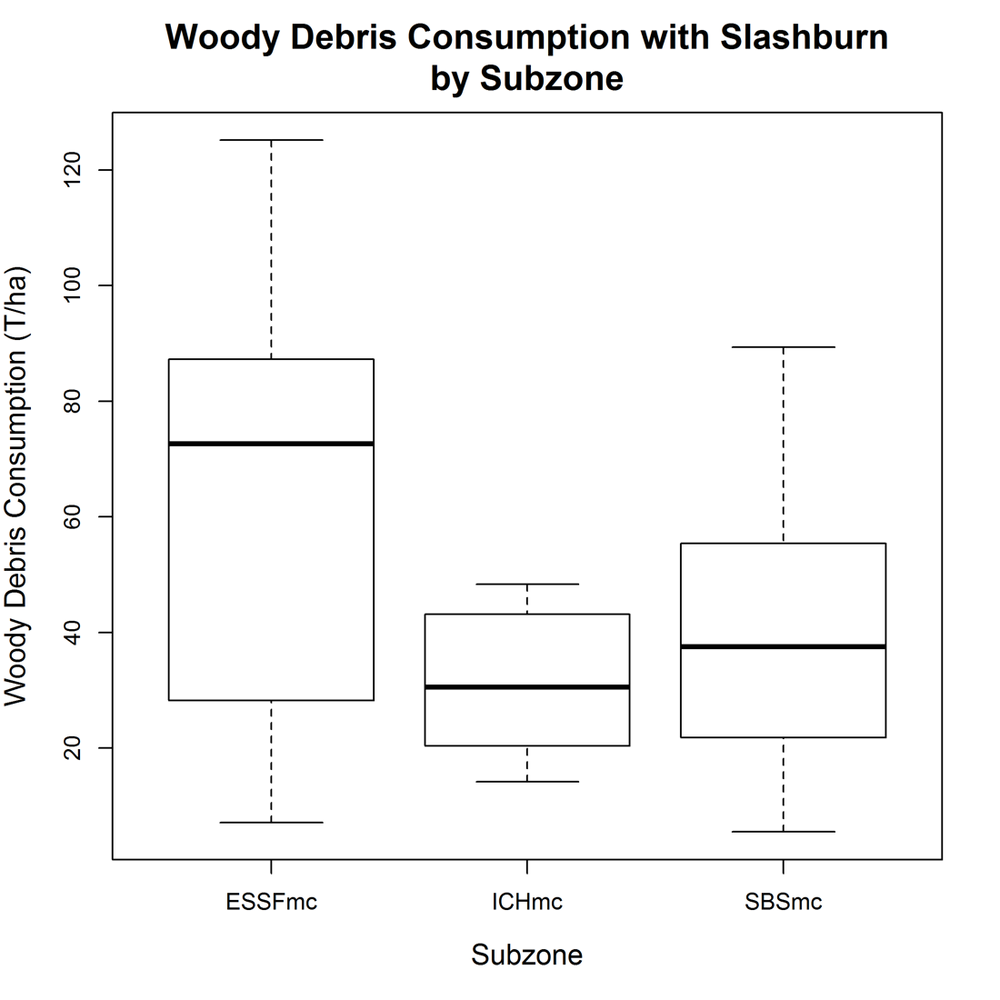
Our results span scales from species to ecosystems, are targeted, and present future directions for management. For example:
Overall management implications: moderate to low severity broadcast burning is consistent with maintaining ecological values in these ecosystems. Future outcomes include providing fully accessible information to guide management decisions such as: 1) which wildfires to target in suppression actions, 2) when and where to prescribe burn to reduce flammability, 3) what areas should be left un-salvaged after wildfire, and 4) where intensive reforestation should be avoided.